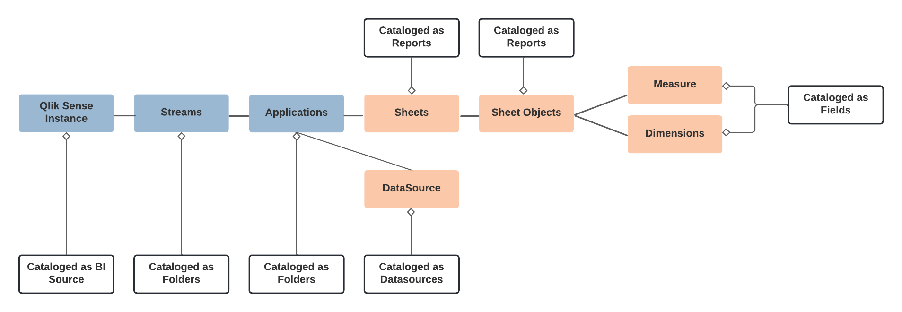

Qlik Sense Enterprise Connector: Overview¶
The OCF Connector for Qlik Sense Enterprise was developed by Alation and is available out of the box.
To download the Qlik Sense Enterprise OCF connector package, go to the Alation Connector Hub available from the Customer Portal. Go to Customer Portal > Connectors > Alation Connector Hub. Only Alation users with access to the Customer Portal can access the Alation Connector Hub. If you don’t have access to the Customer Portal, contact Alation Support.
This connector should be used to catalog Qlik Sense Enterprise as a BI source in Alation. It extracts Qlik Sense Enterprise objects such as Streams, Applications and Sheets. Users will be able to search and find Qlik Sense Enterprise objects, curate Qlik Sense Enterprise object pages, and explore measures and dimensions from the Alation user interface.
Note
Qlik Cloud is not supported by this OCF connector.
Team¶
The following administrators are required to install this connector:
Alation Server Admin:
Installs the connector
Creates a Qlik Sense BI source
Provisions Alation API tokens
Qlik Sense Enterprise administrator with the RootAdmin privilege:
Creates and exports the certificates.
Scope¶
The table below shows what features are covered by the connector.
Feature |
Scope |
Availability |
|---|---|---|
Qlik Sense |
Catalog a Qlik Sense instance as a BI source |
Yes |
Streams |
Extract streams |
Yes |
Filter streams |
Ability to include or exclude specific streams |
Yes |
Applications |
Catalog applications in a stream |
Yes |
Filter applications |
Ability to include or exclude specific applications |
Yes |
Sheets |
Catalog sheets in an application |
Yes |
Filter sheets |
Ability to include or exclude certain sheets |
No |
Sheet objects, dimensions, measures, and expressions |
Catalog dimensions, measures and measures expressions of a sheet object |
Yes |
Auto-generated sheet object titles |
Ability to capture auto generated sheet object titles in Qlik Sense |
No |
Data sources |
Ability to catalog data sources |
Yes |
Master items |
Ability to catalog master items |
No |
Image previews |
Ability to preview thumbnail images of sheet objects |
No |
Source comments |
Ability to extract source comments for sheets and apps |
Yes |
Lineage |
Ability to generate linegae for the BI source |
Yes |
Cross-System lineage |
Ability to generate lineage between the BI source and a data source |
No |
Qlik Sense Enterprise Object Hierarchy¶
The following diagram shows the hierarchy of Qlik Sense Enterprise objects and how they are cataloged in Alation:
{kind=link}
Qlik Sense Enterprise API Methods¶
The table below lists the Qlik Sense Enterprise API methods used by this connector to extract metadata from the Qlik Sense Enterprise server:
Type |
API Methods |
Description |
|---|---|---|
Stream |
GetDocList |
Gets the list of applications which includes streams from Qlik. |
Application |
GetDocList |
Gets the list of applications which includes streams from Qlik. |
Sheets |
OpenDoc CreateSessionObject GetLayout |
Every time when the application is opened, a session is created and the information is returned. |
Sheets Objects |
GetObject GetFullPropertyTree |
GetObject gets basic sheet information. GetFullPropertyTree produces a JSON object with all information. |
Sheet object dimensions, measures, expressions |
GetFullPropertyTree |
Gets each sheet object, its dimensions, measures, and expressions |
DataSources |
GetConnections GetLineage |
GetConnections returns all connections used by the application. GetLineage can be used to tie an application to a set of data sources |
Refer to App API for more information.